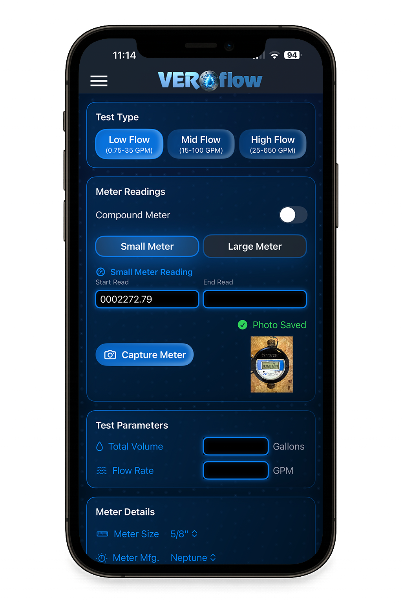

Smart OCR Meter Recognition
Automated capture with intelligent value extraction—snap a photo, and the VEROflow Tester app auto-populates meter readings, serial numbers, and more, saving time and reducing errors.


Elevate your field testing with the VEROflow Tester app—designed for water municipalities using the VEROflow-4 Field Testing Unit. This powerful iOS app streamlines large meter testing, delivering intelligent automation, real-time insights, and secure local data storage for unmatched accuracy and compliance.


Pair seamlessly with your VEROflow-4 Field Testing Unit on iPhone and iPad. Conduct on-site tests, manage data, and access powerful analytics—built for the demands of field testing in water municipalities.

Automated capture with intelligent value extraction—snap a photo, and the VEROflow Tester app auto-populates meter readings, serial numbers, and more, saving time and reducing errors.
Pinpoint accuracy with GPS tracking, Google Maps integration, and reverse address lookup. Document exactly where each test occurs, streamlining workflows for municipal field teams.

Gain real-time insights with an advanced dashboard. Track accuracy, visualize trends with multiple chart options (line, bar, scatter), and make data-driven decisions on the go.

Get instant support with MARS AI Chat. Ask questions, troubleshoot issues, and access expert guidance in real time—empowering your team.

Designed for municipal field teams, the VEROflow Tester app ensures your data stays secure with local storage on your iPhone or iPad. No cloud syncing means your sensitive test data remains private and accessible only on the device you’re using.
The VEROflow Tester app brings meter shop-quality testing to the field for water municipalities. Simplify your workflow, track performance, and document results with precision on iPhone and iPad—empowering your team with efficiency, accuracy, and reliability.
Access searchable test records with chronological tracking. Review past tests and analyze performance over time—all stored locally on your device. Export your data as PDF or CSV reports for seamless documentation, or share them directly from your iPhone to simplify reporting and audits.
Explore the VEROflow product line with interactive 3D models and auto-populated RFQs (Request for Quotes). Simplify procurement for your municipality.

Built for water municipalities who demand the best. VEROflow Tester offers seamless iOS integration, local data storage, and offline functionality—ensuring your field testing is always accurate, secure, and accessible.
Works flawlessly with iPhone and iPad for a unified testing experience.
Keep your test data secure with local storage—no cloud syncing, ensuring privacy and control on your device.
Test anywhere, even without a connection—your data is safely stored locally for reliable access in the field.
Description for placeholder feature 1.
Description for placeholder feature 2.
Description for placeholder feature 3.